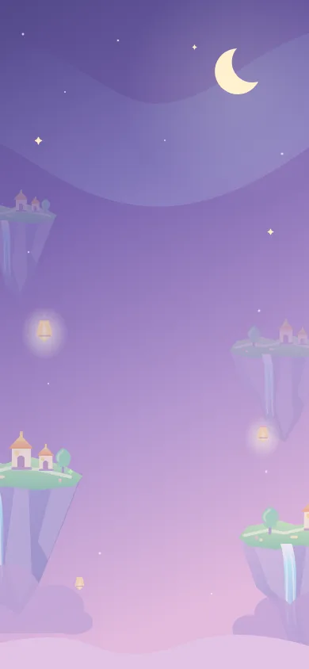

bubbulies
صوّب. طابق. ابتسم.
لعبة إطلاق فقاعات مبهجة ولطيفة لأجهزة iPhone. صوّب، وطابق ثلاث فقاعات أو أكثر من اللون نفسه، وفرقع طريقك عبر خمسة عوالم حالمة.

- 50 مرحلة مغامرة
- 5 عوالم حالمة
- إعادة مجانية بلا مشتريات
- العربية وEnglish
العوالم الخمسة




اللعبة
اسحب فوق القاذف لتصويب الفقاعة، ثم ارفع إصبعك لإطلاقها، وطابق ثلاث فقاعات أو أكثر من اللون نفسه. الفقاعات التي تنفصل عن السقف تسقط وتمنحك نقاطاً إضافية. ارتد بالفقاعة عن الجدران، وبدّل الفقاعة الحالية بالتالية متى احتجت.
- 50 مرحلة مغامرة مصممة يدوياً عبر خمسة عوالم، إضافةً إلى 10 مراحل سريعة في وضع Bonus Pop.
- إعادة المحاولة مجانية: لا أرواح ولا انتظار.
- إعلانات مكافآت اختيارية فقط. لن تحتاج أبداً إلى مشاهدة إعلان لتلعب أو لتعيد المحاولة.
- لا مشتريات بأموال حقيقية. تكسب العملات والمعززات باللعب.
- إعدادات للراحة: تقليل الحركة، ورموز للألوان، ودليل التصويب، ومفاتيح منفصلة للموسيقى والمؤثرات الصوتية والاهتزاز.
- قابلة للعب بالكامل بالعربية والإنجليزية.
الخصوصية باختصار
- يمكنك اللعب دون حساب. يُحفظ تقدمك على جهاز iPhone الخاص بك.
- لا تبدأ الميزات عبر الإنترنت (الحفظ السحابي والأصدقاء والتصنيفات ومكافآت الإعلانات) إلا عندما تختار «ربط حساب».
- لا نطلب أبداً اسمك أو بريدك الإلكتروني أو رقم هاتفك أو جهات اتصالك أو صورك أو موقعك الدقيق.
- تحليلات اللعب وتقارير الأعطال متوقفة ما لم تشغّلها بنفسك من الإعدادات.
- يمكنك حذف حسابك السحابي من داخل التطبيق في أي وقت، أو أن تطلب ذلك منا عبر البريد الإلكتروني.
لمن هذه اللعبة
bubbulies لعبة لجمهور عام من اللاعبين الذين تبلغ أعمارهم 13 عاماً فأكثر. لديك سؤال؟ راسلنا على bubbulies.app@gmail.com.
سياسة الخصوصية
ما الذي تفعله لعبة bubbulies على iPhone وهذا الموقع بالمعلومات، ولماذا، ومدة الاحتفاظ بها، والخيارات المتاحة لك.
اقرأشروط الاستخدام
قواعد اللعب في bubbulies، بما فيها العملات والمكافآت والإعلانات الاختيارية والحسابات واللعب النزيه.
اقرأالدعم
مساعدة في اللعب والتقدم والمكافآت وحسابك، وطريقة التواصل معنا.
اقرأحذف الحساب
كيف تحذف حسابك السحابي في bubbulies من التطبيق أو عبر البريد الإلكتروني، وما الذي يُحذف وما الذي يُحتفظ به.
اقرأالشكر والتقدير
من صنع bubbulies، والبرمجيات مفتوحة المصدر والرسوم التي تستخدمها.
اقرأ